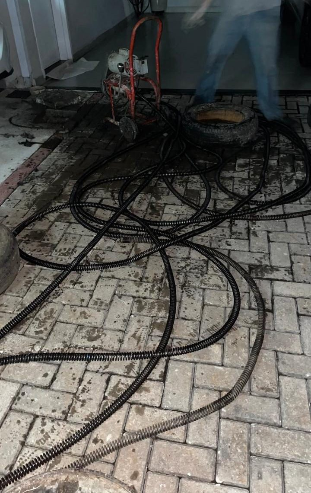

Sinais de vaso entupido
- A água sobe ao dar descarga e demora a baixar.
- A descarga fica lenta ou fraca.
- Aparecem borbulhas no vaso ou no ralo do banheiro.
- Um objeto caiu no vaso e a água não passa mais.
O que costuma entupir o vaso
Papel higiênico em excesso, absorventes, fraldas, cotonetes, lenços umedecidos e fio dental não se desfazem na água e formam bloqueios. Objetos pequenos que caem acidentalmente também são comuns.
Se o vaso entope com frequência mesmo sem esses itens, a causa pode estar na tubulação que sai do banheiro e não no aparelho.
O que fazer enquanto o atendimento não chega
- Não dê descarga repetidamente: a água pode transbordar.
- Se o nível estiver alto, evite usar o banheiro e outros pontos ligados à mesma tubulação.
- Se tiver caído algum objeto, avise ao pedir o atendimento.
Como a Rota Livre atende
Fazemos a avaliação, explicamos o que foi encontrado e o orçamento antes de executar e usamos equipamento adequado ao tipo de obstrução. Ao final, o local é deixado limpo.
Dúvidas frequentes
Atendem vaso sanitário de madrugada?
Sim. O atendimento é 24 horas em Sorocaba e Votorantim.
Um objeto caiu no vaso. Vocês atendem?
Atendemos. Informe o que caiu ao entrar em contato para orientarmos o melhor procedimento.
Preciso trocar o vaso?
Nem sempre. Muitos casos são resolvidos com a desobstrução. A avaliação no local mostra o que é necessário.